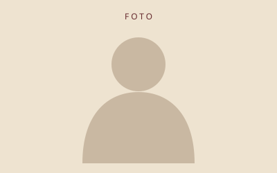

Nome a incluir
Adicione uma breve apresentação ou homenagem.
Reconhecimento e lembrança de pessoas especiais para a história da República Adega.
Espaço preparado para receber nomes, fotografias e histórias reais.

Adicione uma breve apresentação ou homenagem.
Adicione uma breve apresentação ou homenagem.